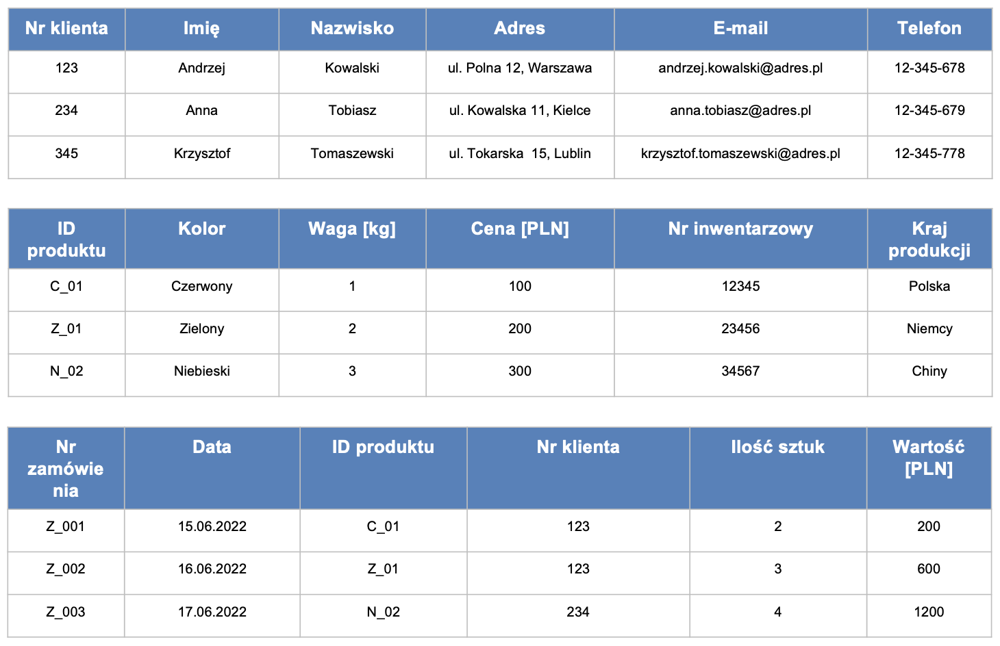
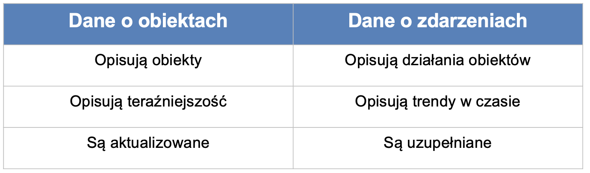
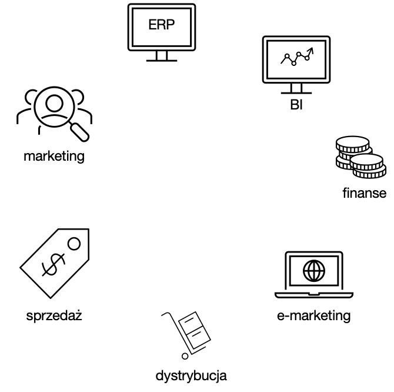
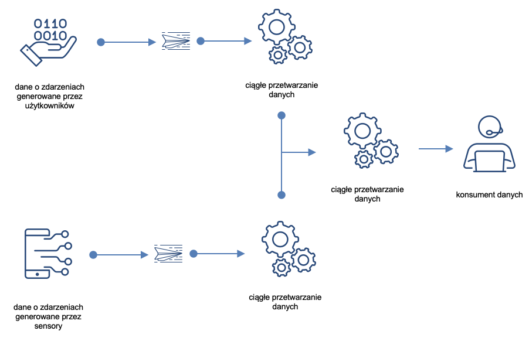
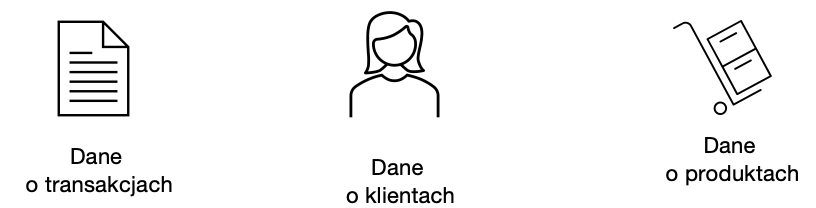

Rozdział 3 Architektury IT
3.1 Potoki danych
Na typową architekturę IT składają się producenci danych, ich konsumenci i system je przetwarzające.

Kluczowe pytania, na które warto odpowiedzieć projektując architekturę IT, to:
- Skąd pozyskamy dane?
- W jaki sposób je pozyskamy? W jaki sposób będziemy je przetwarzać? Jak je będziemy gromadzić?
- Dokąd te dane później trafią?
Najważniejsze powody, dla których warto projektować architektury IT, to:
- Rozwiązanie klasycznych problemów z danymi, takich jak:
- zmieniające się schematy baz i scenariusze użycia
- rosnąca ilość danych
- błędy w danych
- duplikacja danych
- wycieki danych
- opóźnienia (latencja)
- awarie w procesach
- konieczność manualnego zarządzania procesami IT.
- Integracja silosów informacyjnych często obecnych w firmach (osobne systemy wspomagające komunikację, zarządzanie różnymi obszarami działania, etc.)
3.2 Quiz
jakieś pytanie
3.2.1 Typy danych
Najważniejsze typy danych, które napotkamy w projektach uczenia maszynowego, to:
- Dane o zdarzeniach, obiektach i ich agregaty
- Dane ustrukturyzowane, nieustrukturyzowane i częściowo-ustrukturyzowane.

Dane o obiektach (ang. entity data) przedstawiają najczęściej stan obiektu, np. użytkownika, produktu, zamówienia.

Dane o zdarzeniach (ang. event data) opisują działania wykonywane przez (lub na) obiektach.

Najbardziej typowe cechy takich zdarzeń to:
- identyfikator
- typ zdarzenia
- znacznik czasu
- informacje uzupełniające.
Warto podkreślić, że współczesne systemy generują zdecydowanie więcej danych o zdarzeniach niż danych o podmiotach (na każdego użytkownika korzystającego z aplikacji mogą przypadać tysiące zdarzeń).
Dane o zdarzeniach mogą być agregowane np. w celu analiz biznesowych (np. KPIs). Przykładowo, często wykorzystywane w biznesie miary będące wynikiem agregacji danych o obiektach i wydarzeniach to:
- Liczba aktywnych użytkowników Dzienni aktywni użytkownicy (DAU) Tygodniowi aktywni użytkownicy (WAU) Miesięczna liczba aktywnych użytkowników (MAU)
- Długość sesji Czas spędzony przez użytkownika korzystającego z Twojej aplikacji podczas jednej sesji.
- Współczynnik kliknięć (CTR) Stosunek liczby użytkowników, którzy kliknęli na reklamę lub banner do liczby użytkowników, którzy obejrzeli stronę z tą reklamą lub bannerem.
- Współczynnik odrzuceń (BR) Procent użytkowników opuszczających witrynę po obejrzeniu tylko jednej strony.
- Współczynnik konwersji (CR) Procent użytkowników, którzy wykonują pożądaną akcję.
Relację pomiędzy danymi o zdarzeniach i obiektach można podsumować następująco:

Kolejną istotną w uczeniu maszynowym charakterystyką danych jest ich podział na dane ustrukturyzowane, częściowo-ustrukturyzowane i nieustrukturyzowane.

Dane ustrukturyzowane:
- Są uporządkowane w tabelach
- Można określić między nimi relacje
- Można odpytywać korzystając z języka SQL (Structured Query Language)
- Wymagają wskazania schematu (Schema): sposobu organizacji danych.
Dane częściowo-ustrukturyzowane:
Nie są zgodne z relacyjnymi bazami danych, takimi jak Excel czy SQL, ale mają pewien poziom organizacji, np. znaczniki.
Nie są ściśle relacyjne
Po przetworzeniu mogą być przechowywane w:
- relacyjnych bazach danych
- bazach NoSQL
- plikach CSV, XML i JSON.
Dane nieustrukturyzowane:
Najczęściej dane jakościowe
Nie posiadają schematu/modelu, czy też relacji
Można je składować w bazach NoSQL i jeziorach danych
Przykłady: pliki audio, video, dokumenty tekstowe, wpisy na forach dyskusyjnych, etc.
3.2.2 Bazy danych
Technologie gromadzenia danych powinny być dostosowane do ich typu.

3.2.2.1 Bazy SQL
Dane ustrukturyzowane
- Uporządkowane w tabelach
- Można określić między nimi relacje
- Można odpytywać językiem SQL (Structured Query Language)
- Wymagają wskazania schematu (Schema): sposobu organizacji danych
- W efekcie, gromadzimy najczęściej w bazach SQL.
Kluczową technologią w tego typu systemach jest OLTP (OnLine Transaction Processing).
Przykładowe bazy SQL: Oracle, MS SQL Server, MySQL, PostgreSQL
Przykładowe zastosowania: systemy finansowe, transakcyjne, ERP, etc.
3.2.2.2 Bazy NoSQL
Bazy NoSQL służą do przechowywania danych nieustrukturyzowanych.
Wyróżniamy 4 podstawowe typy baz NoSQL.
- Bazy zorientowane na dokumenty
- Bazy kolumnowe
- Bazy oparte o wartości kluczy (key-value)
- Bazy grafowe.

Bazy zorientowane na dokumenty:
- Nie posiadają ustalonego schematu
- Dane składowane w dokumentach JSON (JavaScript Object Notation)
- Każdy dokument może mieć inny zestaw pól
- Przykładowe bazy: MongoDB, CouchDB, DocumentDB
- Przykładowe zastosowania: systemy zarządzania dokumentami.

Bazy kolumnowe
- Dane składowane są w nich w kolumnach (nie w wierszach)
- W efekcie, operacje (zapytania, dodawanie, kasowanie, etc.) oparte na kolumnach działają w nich bardzo szybko
- Przykładowe bazy: Cassandra
- Przykładowe zastosowania: zaawansowane analizy danych.

Bazy oparte o wartości kluczy (key-value)
- Każdy wpis ma w nich unikatowy klucz
- Efekt: umożliwiają szybszy zapis i odczyt danych
- Przykładowe bazy: Redis, Amazon Dynamo DB
- Przykładowe zastosowania: opinie klientów.

Bazy grafowe
Dane skladowane w formie sieci
Koncentracja na połączeniach (relacjach) pomiędzy punktami (obiektami)
Wykorzystywane w analizach relacji
Przykładowe bazy: Neo4j, Inifinite Graph
Przykładowe zastosowania: analiza sieci społecznych.
3.2.3 Hurtownie danych
Bazy danych, oparte na technologii OLTP (OnLine Transaction Processing) są zaprojektowane w celu zapewnienia efektywnego działania systemów transakcyjnych. Ich celem nie jest optymalizacja analityki
Hurtownie danych:
- oparte są o technologie OLAP (Online Analytical Processing), wspomagające użytkowników w interaktywnej analizie wielowymiarowych danych, w szczególności:
- Konsolidacji (grupowania)
- Drążenia (drill-down)
- Przekrojów danych
- Hurtownie danych wykorzystują dane zgromadzone w bazach danych (OLTP), tworząc warstwę zoptymalizowaną pod kątem zastosowań analitycznych.
W efekcie, hurtownie danych integrują dane z różnych źródeł, będąc często centralnym repozytorium informacji zoptymalizowane pod kątem analityki biznesowej.
Źródłami danych dla hurtowni danych są różne systemy transakcyjne i inne bazy danych.
Główne zalety i korzyści ze stosowania hurtowni danych to:
- Konsolidacja danych w jednym miejscu
- Szybsze analizy biznesowe
- Ułatwione procesy transformacji i wzbogacania danych oraz inżynierii cech
- Poprawa jakość danych.
Wady i ograniczenia hurtowni danych:
- Mogą być kosztowne
- Wymagają ciągłej opieki (czyszczenie, transformacja, integracja danych, …)
- Bywają zbyt złożone w przypadku doraźnych potrzeb analitycznych.
Hurtownie danych warto stosować w danej organizacji:
- Jest wiele rozproszonych baz danych/systemów dziedzinowych
- Jest wiele różnych baz danych
- Jest gromadzona duża ilość danych historycznych.
3.3 Jeziora danych
Jeziora danych to repozytoria, które przechowują dane w ich naturalnej postaci. Stanowią zazwyczaj pojedynczy zbiór wszystkich danych przedsiębiorstwa. Są źródłem danych dla systemów umożliwiające raportowanie, wizualizację, zaawansowaną analitykę i uczenie maszynowe.
Główne zalety jezior danych:
- Można w nich przechowywać duże ilości danych…
- …które mogą mieć różne formy:
- Ustrukturyzowane
- Cześciowo ustruktyryzowane
- Nieustrukturyzowane
- Przetwarzanie przed załadowaniem nie jest wymagane.
Główne wady i ograniczenia jezior danych to:
To technologia, która wciąż się rozwija
Problemy ze specjalistami
Zarządzanie danymi może być uciążliwe
Niskie koszty mogą stymulować gromadzenie danych niepotrzebnych
Prywatność danych: dane całej organizacji w jednym repozytorium.
Jeziora danych warto stosować w następujących sytuacjach:
Eksperymenty Data Science: chcemy sprawdzić proof-of-concept architektury przed zainwestowaniem w profesjonalny potok danych
Do analizy danych w obszare cyberbezpieczeństwo: gromadzenie logów z wielu urządzeń w celu analizy pod kątem bezpieczeństwa
Do analizy danych o klientach: gromadzenie i analiza danych o zachowaniach klientów z wielu źródeł i kanałów (www, mobile, sklepy tradycyjne, e-commerce, systemy lojalnościowe, CRM, etc.).
3.4 Konsumenci danych
Analizę potrzeb, która będzie podstawą dla projektu architektury systemu IT/uczenia maszynowego, warto rozpocząć od zbadania potrzeb użytkowników końcowych (konsumentów danych), podstawowych celów biznesowych i typowych scenariuszy użycia.
Kluczowe pytania, które warto zadać na tym etapie, to:
W jaki sposób konsument danych chce z nich korzystać? Do raportowania, tworzenia wizualizacji, podejmowania decyzji, a może do budowania modeli Machine Learning (ML)?
Jakie narzędzia są aktualnie używane przez użytkowników? Microsoft Excel, Tableau, Microsoft Power BI lub Google Data Studio?
Czy istnieją jakieś standardy w ramach danej grupy użytkowników? Dział prawny może potrzebować danych w innej postaci niż księgowość czy finanse.
Możliwe cele biznesowe to:

Najbardziej typowe scenariusze użycia:

3.4.1 Producenci danych
 Typowe źródła danych o zdarzeniach to:
Typowe źródła danych o zdarzeniach to:
- Strony www generujące dane o zachowaniach użytkownika:
- Pobrania
- Kliknięcia
- Wypełnienie formularza
- Komentarze
- Media społecznościowe:
- Publikacja wpisu
- Udostępnienie obiektu (wpis, zdjecie, film, …)
- Polubienie obiektu
- Hashtag
- Wystawienie opinii
- Systemy IT, generujące sygnały takie jak:
- Replikacja danych
- Synchronizacja danych
- Uruchomienie zadania
- Wykasowanie zadania, etc.
- Sensory, np.
- Detektory ruchu
- Detektory głosu
- Detektory temperatury
- Detektory dymu, etc.

Typowe źródła danych o obiektach to:
Systemy transakcyjne i dziedzinowe (ERP, CRM, etc.)
Bazy danych
Hurtownie danych
Pliki i (rozproszone) systemy plików
Źródła zewnętrzne, API (Application Programming Interface).
3.5 Transformacja danych
Dane pozyskane ze źródeł są najczęściej przetwarzana na dwa różne sposoby:
- ETL: Extract > Transform > Load
- ELT: Extract > Load > Transform.

3.5.1 Przetwarzanie ETL (Extract, Transform, Load)
Ekstrakcja danych (ang. extract) to czynność lub proces pobierania danych ze źródeł danych w celu ich dalszego przetwarzania lub przechowywania.
Transformacja danych (ang. Transform) to zbiór reguł lub funkcji stosowanych do pozyskanych danych w celu przygotowania ich do załadowania do docelowego systemu.
Ładowanie danych (ang. load) polega na przekazaniu danych do docelowego magazynu: płaskiego pliku, bazy czy hurtowni.
Dane mogą być przetwarzane wsadowo lub w sposób ciągły (strumieniowe).

Przetwarzanie wsadowe (ang. batch processing) polega na jednoczesnym przetwarzaniu dużej ilości danych.

Przetwarzanie strumieniowe (stream processing) odbywa się w czasie zbliżonym do rzeczywistego - dane są przetwarzane w miarę ich napływu. Przykłady: przetwarzanie płatności i wykrywanie oszustw.
Wyzwania związane ze stosowaniem przetwarzania ETL:
Zbyt dużo danych.
Ilość danych generowanych rośnie
Programy służące do transformacji mogą liczyć miliony linii. Może to bardzo utrudnić skalowanie potoku ETL.
Przekształcanie wszystkich danych przed ich załadowaniem może być zbyteczne. Przykładowo może się okazać, że nie ma potrzeby przetwarzania wszystkich danych o zdarzeniach generowanych na stronie internetowej jednocześnie.
Różne typy danych
- Różne typy danych (ustruktyrozowane, nie ustruktyryzowane, o obiektach czy zdarzeniach) wymagają różnych metod transformacji.
- ETL najlepiej sprawdza się w przypadku ustrukturyzowanych danych o obiektach (structured, entity).

W efekcie, ETL warto stosować, w sytuacji, gdy dysponujemy dużą ilości ustrukturyzowanych danych transakcyjnych.
3.5.2 Przetwarzanie ELT (Extract, Load, Transform)
W przetwarzaniu ELT:
- dane różnego typu (ustrukturyzowane, nieustrukturyzowane lub częściowo ustrukturyzowane)
- pobierane są z różnych źródeł danych
- a następnie ładowane do magazynu danych, np. jeziora danych.
Transformacja następuje po załadowaniu do jeziora, po czym przetransformowane dane przekazywane są do dalszego wykorzystania przez ich konsumentów.
Wyzwania przetwarzania ELT:
- Są drogie:
- Dużo danych różnego typu
- Wymagają skalowalności
- Wymagają dużych zasobów (składowanie, przetwarzanie)
- Odpowiednie technologie są stosunkowo nowe:
- i w efekcie mogą być mniej niezawodne niż ETL
- trudno w związku z tym o specjalistów
- i trudniej zapewnić bezpieczeństwo.
ELT warto stosować:
- Gdy gromadzimy duże ilości danych
- Nie ma możliwości przetwarzać ich przed załadowaniem
- Dane są nieustrukturyzowane lub mieszane.
Przykładowe zastosowania: dane do analizy sentymentu (opinie, e-mail’e, gwiazdki), dane z logów systemowych, etc.
3.6 Strategia wdrożenia
3.6.1 Własne czy gotowe?
Jedną z pierwszych decyzji, którą należy podjąć już podczas projektowania architektury IT, jest to, czy wykorzystamy rozwiązanie gotowe, czy też stworzymy własne?
Generalnie, rekomenduję kierować się następującą zasadą:
- w pierwszej kolejności sprawdź, czy dane rozwiązanie jest dostępne na rynku? Jeśli tak: wykorzystaj je.
- dalej, sprawdź, czy można dostosować jakieś rozwiązanie do Twoich potrzeb
- … a dopiero jeśli nie jest możliwe skorzystanie z rozwiązania gotowego, nie ma też niczego, co można by dostosować: stwórz własne rozwiązanie.

Kup gotowe, gdy…:
całkowity koszty zakupu jest dużo niższy niż wytworzenie
budowa zajmie zbyt dużo czasu
dla w miarę uniwersalnych problemów biznesowych (np. HR)
jeśli Twoje problemy biznesowe już zostały przez kogoś rozwiązane, i na rynku są już liderzy takich rozwiązań.
Kupno gotowego rozwiązania przyspiesza zarówno wejście na rynek, jak i jego skalowanie w przyszłości
Stwórz własne, gdy…:
obszar obsługiwany systemem jest kluczowym czynnikiem przewagi konkurencyjnej
koszty dostosowania gotowego produktu są bardzo duże, całkowity koszty wytworzenia jest dużo niższy (programowanie, testowanie, konfiguracja, skalowanie, ludzie (specjaliści), infrastruktura)
wytworzenie wymaga głębokiego zrozumienia specyfiki biznesu
bardzo zależy Ci na czasie, a dostawcy nie mogą zagwarantować realizacji niezbędnego zakresu w terminie.
3.6.2 Otwarte czy komercyjne?
Decyzja o tym, czy zakupić rozwiązanie licencjonowane, czy też budować własne w oparciu o technologie otwarte (ang. open-source), to kolejny dylemat, przed którym stoją kierownicy projektów czy projektanci architektur systemów IT.

Wybierz rozwiązanie otwarte (open-source), gdy:
ktoś już stworzył to, czego potrzebujesz?
kod jest dobrze wspierany przez dużą i aktywną społeczność (np. na dużo twórców i commit’ów na GitHub.com)
całkowity koszt posiadania takiego rozwiązania (TCO: Total Cost of Ownership) jest niski
koresponduje to z wizerunkiem Twojej marki
potrzebujesz nie tylko aplikacji, ale też kodu źródłowego.
Wybierz rozwiązanie komercyjne, gdy:
jest prostsze w dostosowaniu do Twoich potrzeb i wdrożeniu
jest standardem branżowym (np. arkusze kalkulacyjne)
potrzebujesz wiarygodnego wsparcia
całkowity koszt posiadania rozwiązania otwartego (TCO: Total Cost of Ownership) jest wysoki
gdy musisz zagwarantować, że nie naruszasz czyichś praw autorskich
istotne jest bezpieczeństwo (choć nie zawsze…).
3.6.3 U siebie czy “w chmurze”?
Systemy IT/uczenia maszynowego możesz utrzymywać na własnej infrastrukturze, lokalnie w organizacji, lub też “w chmurze” (prywatnej lub publicznej).

Utrzymuj na swoich serwerach, gdy:
chcesz mieć pełną kontrolę nad infrastrukturą i danymi
całkowite koszty posiadania będą niższe niż w chmurze
będziesz musiał często przesyłać duże ilości danych z własnych rozwiązań do “chmury” (egress) i z powrotem (ingres)
rozwiązanie chmurowe może generować nieakceptowalne problemy z latencją (szybkością odpowiedzi serwera)
stabilność działania jest krytyczna, i niemożliwa do zapewnienia przez dostawcę.
Utrzymuj w chmurze, gdy:
zależy Ci na koncentracji na swoim biznesie (uwolnieniu uwagi z konieczności monitoringu i rozwoju IT)
chcesz obniżysz koszty posiadania i utrzymania infrastruktury IT
istotna jest elastyczność skalowania rozwiązania (sezonowość, rozwój)
potrzebujesz ciągłego, wiarygodnego wsparcia
zasady firmy i reguły bezpieczeństwa dopuszczają takie rozwiązanie.
3.7 Overview
Research is defined as a systematic investigation whose goal is to develop or contribute to generalizable knowledge. As global health is the study and practice of improving health and achieving equity in health, global health research research includes all systematic efforts to create generalizable knowledge of how we can improve health and achieve equity in health for everyone, everywhere.
Given the complexity of our global health challenges, global health research is multidisciplinary and interdisciplinary. This means that, as a budding global health researcher, you will likely collaborate on teams with colleagues from many different fields. Each discipline has its own methodological preferences and core approaches, but we all operate in the same research landscape that is divided into basic and applied research. Much of the literature in global health focuses on our applied challenges, so you will read a lot about clinical research and trials, translational research, implementation research, and M&E (monitoring and evaluation).
So no matter what discipline you call home, or what stage of research you find most interesting, you can make great contributions to our collective efforts to improve health and achieve equity in health.
3.8 Before class
3.8.1 Prepare
- Read GHR Chapter 1 and watch/listen to the media embedded in the main text (media in the margin notes are optional).
- Think about where your interests lie in the global health research landscape and be prepared to share with classmates.
- Browse one or more of the journals that publish global health research and find at least one article that interests you.
3.10 After class
An optional activity is to get to know your local global health resources. For students living in the Research Triangle, this includes:
- Duke Global Health Institute
- UNC Gillings School of Global Public Health
- fhi360
- IntraHealth International
- RTI International
Visit the websites, take note of upcoming events, sign up for newsletters, and browse faculty/researcher profiles.